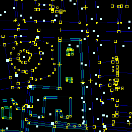
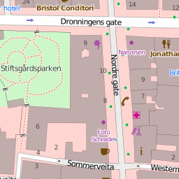
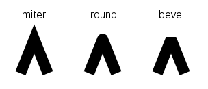

Iván Sánchez Ortega
[This space for rent]
ivan@sanchezortega.es
- Travel to Portland, Oregon, USA
- Attend FOSS4G
- Summarize the state of the art of geospatial data storage
For all of us who couldn't attend FOSS4G...
 ⇨ 
... a thousand million times
Assume rendering is slow
disk i/o, network i/o, reprojection, bad code
Assume you know what the bottleneck is
Use cheap hardware
recommended ≤ 2 CPU cores and ≤ 1 GiB RAM
don't use SSDs, RAID nor NAS
Use WMS
Unless you really, really know what you're doing
Trust standards designed by committee
Unless you really, really know what you're doing
Reproject coordinates on-the-fly
Map projection ≠ data projection
Do not transform your data for exploitation
Database normal forms are always your friends
Render multithreaded under high load
Danger of contention
Keep CPU load > number of cores
And remember to not monitor it
Render large datasets multiprocess
Keep number of cores * working set > RAM
Render tiles multi-threaded and multi-process
Use multi-process and multi-thread for the same operation
Don't care about the difference between processes and threads
Shared memory, process contexts
Place a lot of text labels
Don't care about algorithmic complexity
If you do, use things heavier than O(n*log(n))
Use round line-joins for detailed lines

Go way beyond "good enough"
Don't use (spatial) database indexes
Don't vacuum your DB
Hiring DBAs is too expensive
Query more data than you need
Bonus points if you
Load (or traverse) the entire dataset in memory every time
Hint: don't use WHERE in your SQL clauses
Always use a fully-detailed coastline
Bonus points if > 1000 coastline segments inside 1 pixel
Bonus points if rendering artifacts
Do not transform your data for exploitation
If you're think you're better than the rest of the world,
Write your own server
Cache too much
Preemtively, or renders of rapidly-changing data
Use old OS or old libs
RHEL anyone?
Do batch processing in serial
Don't use mechanisms for parallelization
Use only one domain name for your map server
- a.tile.openstreetmap.org
- b.tile.openstreetmap.org
- c.tile.openstreetmap.org
- d.tile.openstreetmap.org
Use old OpenLayers 2 plus mouse scrollwheel
Make sure your clients make needless requests